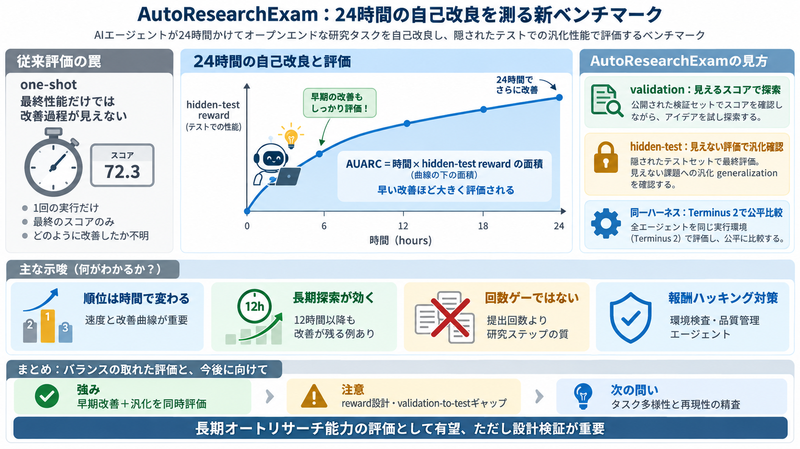

Claude Code vs Codex: Coding Agent Comparison | Artificial Analysis
Artificial Analysis # Claude Code vs. Codex Comparison between Claude Code and Codex across the Artificial Analysis Co…

Artificial Analysis # Claude Code vs. Codex Comparison between Claude Code and Codex across the Artificial Analysis Co…
We evaluate each model using its compatible agent scaffolds. We run Claude Code, Gemini CLI, and Codex CLI with their re…
The harness effect: Terminal-Bench 2.1, same models, different scaffolding Axis 0-100%. Native harness vs neutral publi…
| | | | | --- | | | How are you measuring Claude Code and Codex performance? | | | | 3 points by achalpandey 63 …
⏳ Timestamps ⏳ 00:00 | Overview 00:57 | What is a Agentic Harness 03:10 | Boot.dev 04:22 | Codex CLI & Claude Code 07:05…